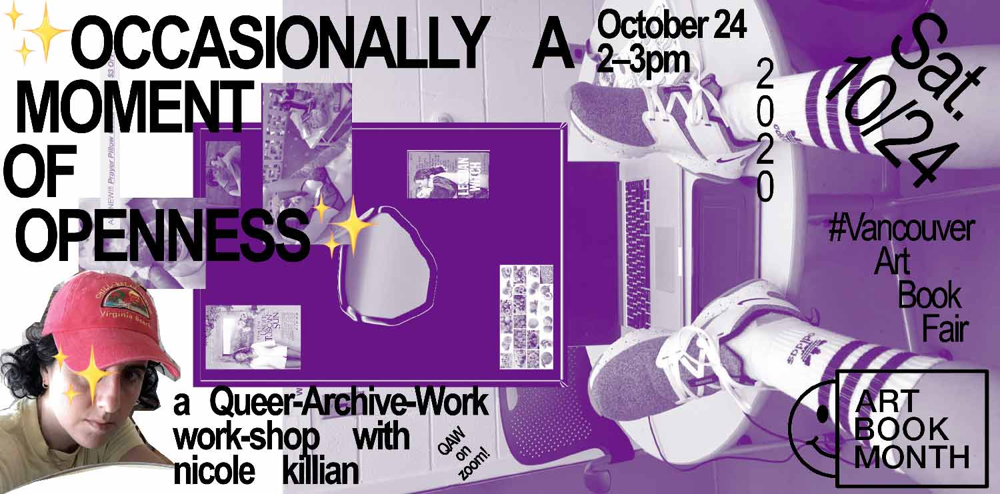
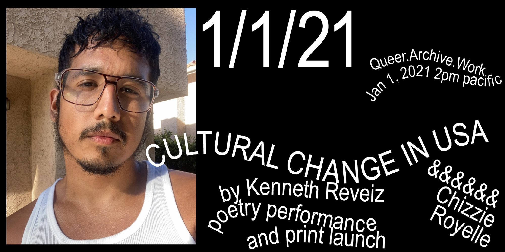

Queer.Archive.Work is a 501(c)(3) nonprofit reading room, publishing studio, and project space serving Providence, RI and beyond. → our mission
QAW 2021–22 Residents
Summer updates
What is queer typography? Zine available

QAW + Binch!


QAW Residency 2021–22 Open Call
Applications for the 2021–22 round closed on May 28, 2021. → More info


We are now collecting PDFs of significant and difficult-to-find publications from the last fifty years, focusing on urgency, radicality, and liberation. These files are posted openly for free download, with links to the source material, if known. If you’d like to suggest a PDF to the Download Library, please send us a note!
The PVD Tool Sharing Library is a volunteer project generously introduced to QAW by community member Hannah Suzanna. It’s an experiment in communal resource sharing; all of the items in the collection are stored in homes and work spaces in the Providence, RI area and available for free use. Click through to browse the tools and use this form if you’d like to add a tool to the collection (non-traditional/fun/weird/queer tools definitely encouraged)!


 Sloan Leo’s open studio at QAW, September 12, 2020 (left) / Cierra Michele Peters at work at QAW, August 2020 (right)
Sloan Leo’s open studio at QAW, September 12, 2020 (left) / Cierra Michele Peters at work at QAW, August 2020 (right)


Who we serve: QAW welcomes all, but priority is always given to LGBTQIA+, BIPOC, immigrant, disabled, and other underserved folks. This is a free, open, and accessible anti-racist community space (please see our code of conduct). We invite you to come by to chat about your work, use our risograph printer, make zines, and spend time in the library, but because of COVID-19 safety our capacity for visitors is limited. Please email if you’re interested!
QAW shares a 2,200 s.f. studio with Binch Press at 400 Harris Avenue, Unit F, Providence, RI 02909, in the Valley Arts District of Providence. Founder / Director / Attendant: Paul Soulellis.
QAW Riso Residencies
＊2020–21 QAW Residents Announced＊
Mutual Aid Publishing During Crisis
Urgency Reader 2 available for download
QAW at The Brooklyn Art Book Fair
A special reprint of excerpts from Urgency Reader 2 sold out at the Brooklyn Art Book Fair June 2020, benefiting The Marsha P. Johnson Institute and QAW Residencies




QAW Publications
WHAT IS QUEER TYPOGRAPHY? (July 2021)
QUEER MATTERS (February 2021)
CULTURAL CHANGE IN USA (January 2021)
SCREEN ZINE (August 2020)
URGENCY READER 2 (April 2020)
URGENCY READER (December 2019)
QUEER.ARCHIVE.WORK 3 (September 2019)
QUEER.ARCHIVE.WORK 2 (January 2019)
QUEER.ARCHIVE.WORK 1 (September 2018)
QAW Workshops and Events
PRINTED MATTER’S VIRTUAL ART BOOK FAIR (February 2021)
“CULTURAL CHANGE IN USA” with Kenneth Reveiz and Chizzie Royelle (January 2021)
Vancouver Art Book Fair: “OCCASIONALLY A MOMENT OF OPENNESS” with nicole killian (October 2020)
Brooklyn Art Book Fair (June 2020)
Image Text Ithaca (June 2019)
Urgency Lab RISD (Spring 2019)
INTERRUPT V (February 2019)
NY Tech Zine Fair at SFPC (December 2018)
Hauser & Wirth/MoMA PS1 Bookstore (August 2018)
This website is licensed under Creative Commons CC BY-NC-SA 4.0 


Queer.Archive.Work, Inc. • Incorporated 2020 •
A 501(c)(3) not-for-profit organization
400 Harris Avenue, Unit F / Providence, RI 02909 / (212) 243-5080
Instagram /
Twitter /
Email